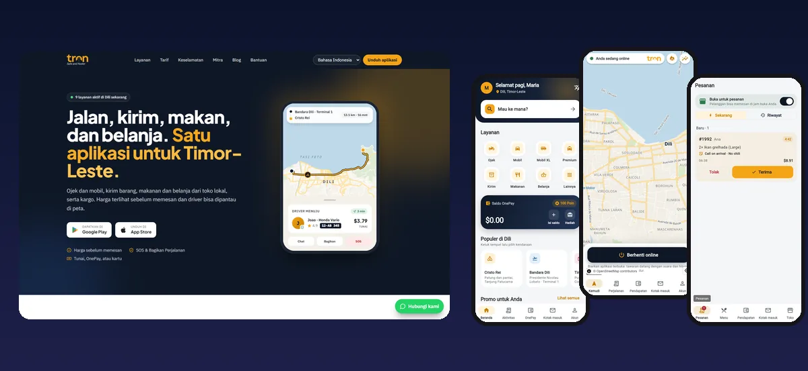

TRON — Ride-hailing & Delivery Super App
Transporte Online for Timor-Leste: rides, deliveries, food and shopping in one platform — a public website, Flutter apps for customers, drivers and merchants, an admin console for Ops, Finance, Compliance and Support, and Grafana monitoring with Telegram alerts.
- 8 Go services behind one gateway, 295 documented API endpoints, real-time trips over WebSocket
- Server-side fares with OSRM routing, self-hosted Timor-Leste map, OnePay wallet with a double-entry ledger
- Safety: SOS, Share My Trip, pickup PIN, verified partners; promotions, rewards and push notifications